Write, preview, and organize Markdown on Mac and iPad. Choose the workspace
for your device, with optional local artificial intelligence (AI) assistance and purchases managed by Apple.
Free Download · In-App Purchases See Apple’s current prices, subscription terms, and eligible offers before purchase.
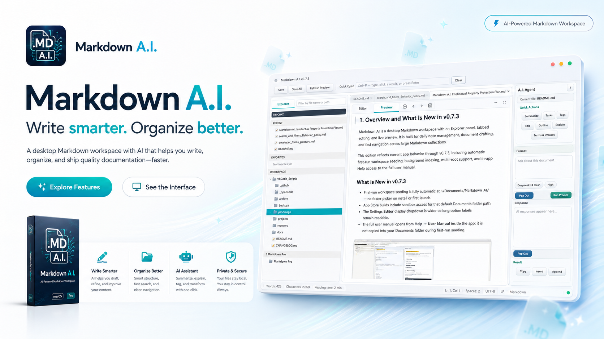
Your Markdown Workspace, on Mac and iPad
Choose an edition built for the way you work. Features and local AI requirements differ by platform.
macOS
Markdown A.I. for Mac
A desktop workspace for real files, real folders, and longer writing sessions.
Edit Markdown beside a live preview, with Mermaid diagrams and syntax highlighting.
Browse authorized folders, use Quick Open and Favorites, and restore your workspace.
Edit Preview tables and recover documents and unsaved changes.
Optionally connect to Ollama, LM Studio, or a compatible local AI endpoint.
Local AI on Mac requires a compatible server and model that you install separately. Editing and preview work without AI.
iPadOS
Markdown A.I. for iPad
A touch-friendly workspace for writing, previewing, and organizing documents on iPad.
Use Editor, Preview, or both, with panels you can resize or hide.
Open files and supported folders through Apple Files, with document and portfolio navigation.
Use draft recovery, save confirmation, sharing, and keyboard shortcuts.
Summarize, proofread, and rewrite with supported on-device AI requests.
Requires iPadOS 16.4 or later. Local AI availability and performance vary by device and operating system; file-provider capabilities also vary.
Download and Subscribe Through Apple
Download Markdown A.I. from the App Store for your device. The app offers in-app purchases; review the available subscription options, localized price, renewal terms, and any eligible introductory offer before confirming with Apple.
Start With the App Store
Open the Mac or iPad listing to check device compatibility and download the app. In the app, open the subscription options when you are ready to purchase.
Review Your Options
Apple displays the current offers and determines introductory-offer eligibility. Check the terms shown for your device and Apple Account.
Manage Your Purchase
Manage or cancel subscriptions through your Apple Account. Use Restore Purchases in the app when restoring an existing purchase.
The macOS edition keeps editing, preview, and file navigation in one calm workspace
designed for real folders and long writing sessions. Click any card to enlarge.
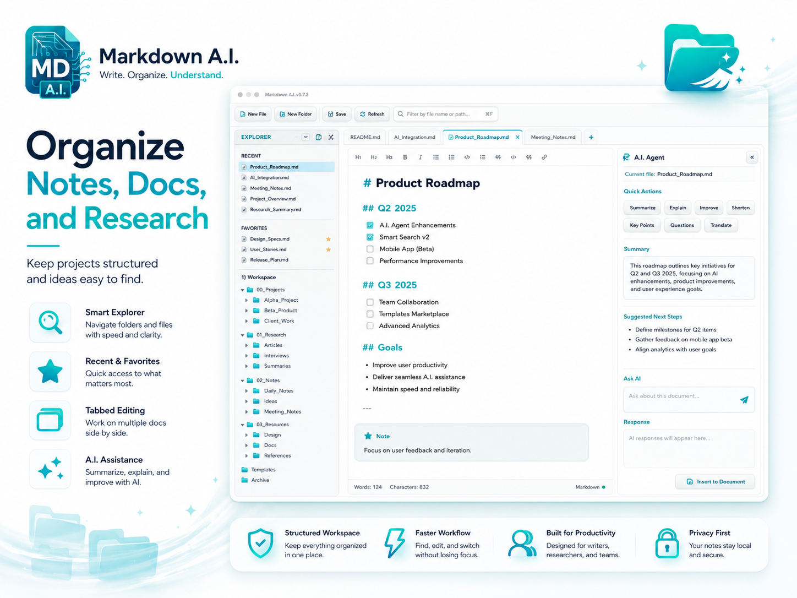
Organize Local Notes & Folders
Navigate folders you open or add as markdown roots, star favorites, reopen recent files, and work in tabbed sessions — documents stay on your Mac and the app only reads and writes where you point it.
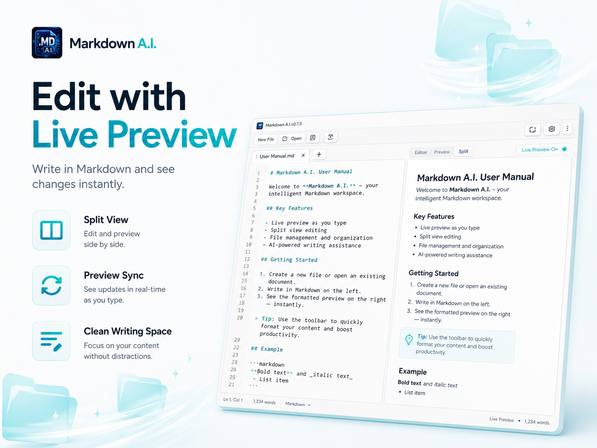
Side-by-Side Live Preview
Edit markdown on the left and see rendered output on the right with WebKit-powered preview, syntax highlighting, and Mermaid diagram support.
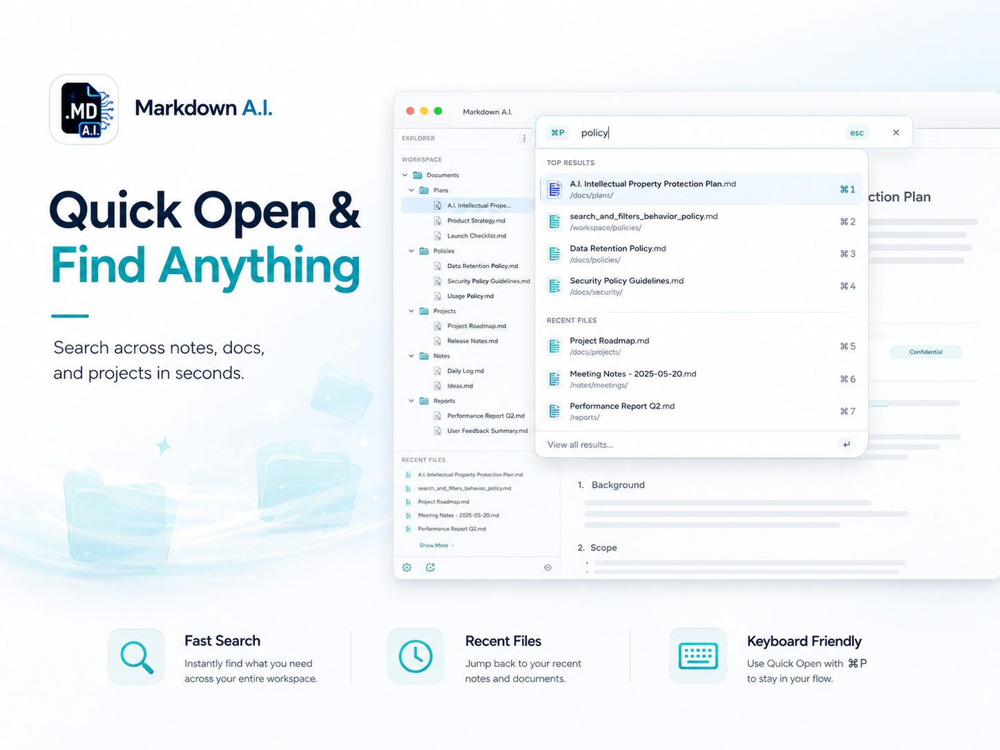
Quick Open & Find Anything
Jump to any file in seconds with fuzzy search, recent-file shortcuts, and keyboard-friendly navigation that keeps you in flow.
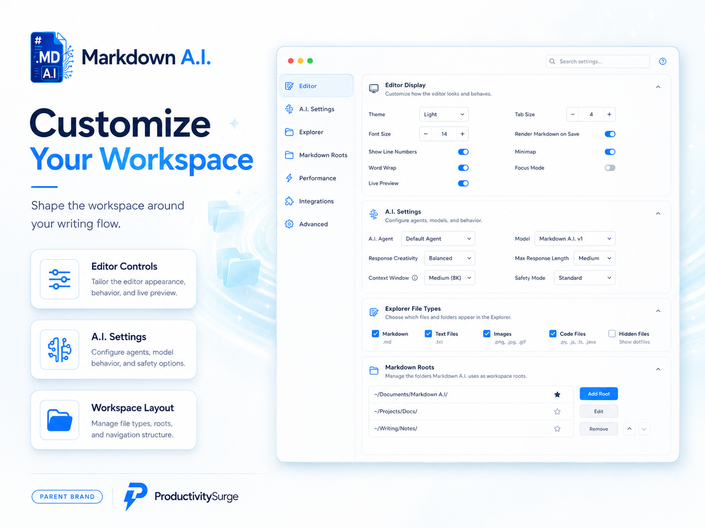
Customize Your Workspace
Tailor editor appearance, live preview behavior, AI settings, explorer file types, and markdown roots to match how you write.
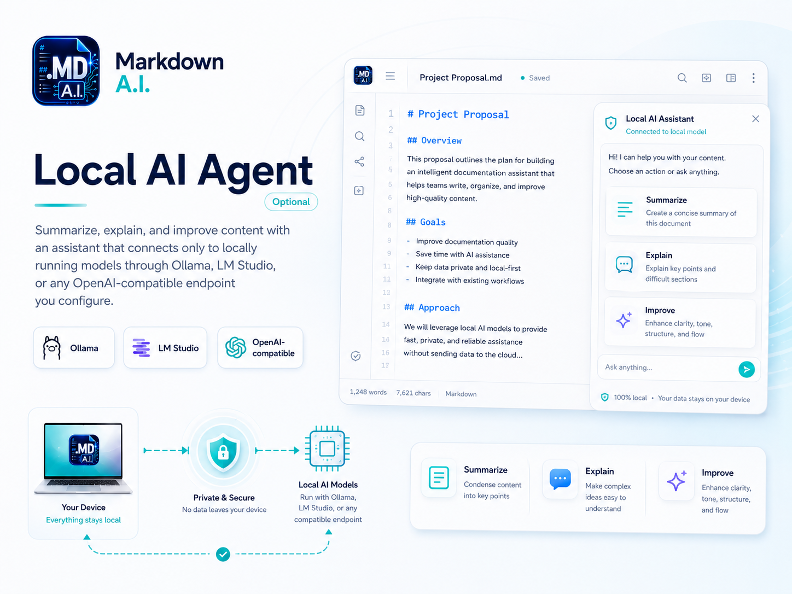
Local AI Agent
Summarize, explain, and improve content with an assistant that connects only to locally running models through Ollama, LM Studio, or a custom local A.I. server you configure.
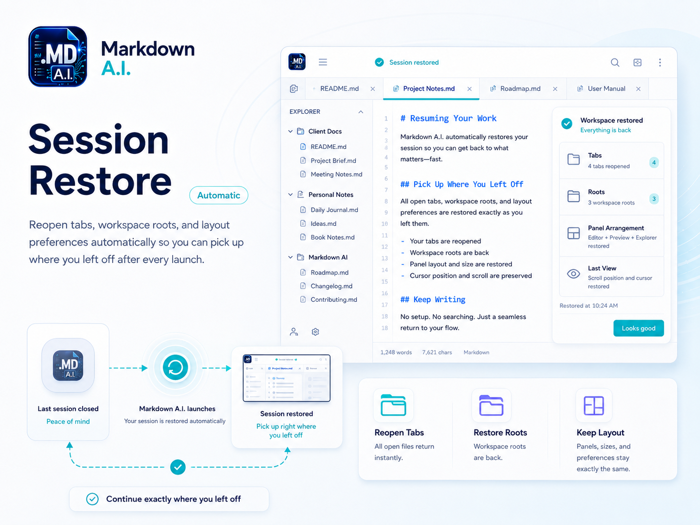
Session Restore
Reopen tabs, workspace roots, and layout preferences automatically so you can pick up where you left off after every launch.
Explore the iPad Workspace
See the iPadOS edition in light and dark appearances, with flexible editing and preview layouts. Click any card to enlarge.
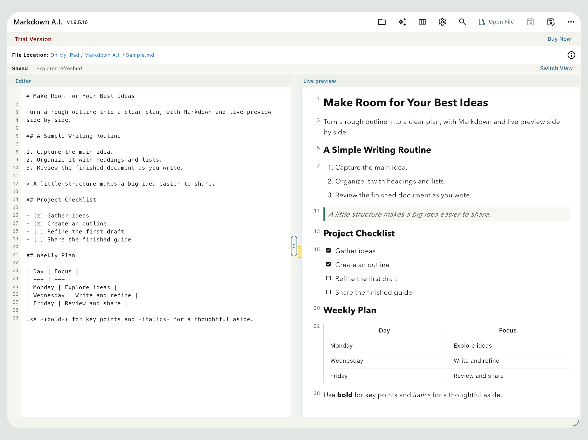
Write and Preview Side by Side
Write Markdown and see headings, lists, and tables rendered beside your draft.
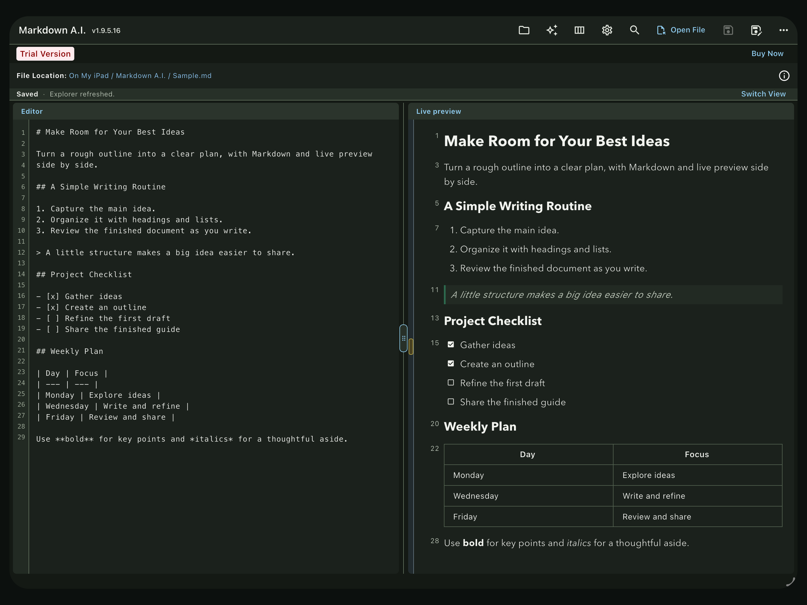
Work in Dark Mode
Keep the same side-by-side workspace in a dark appearance.
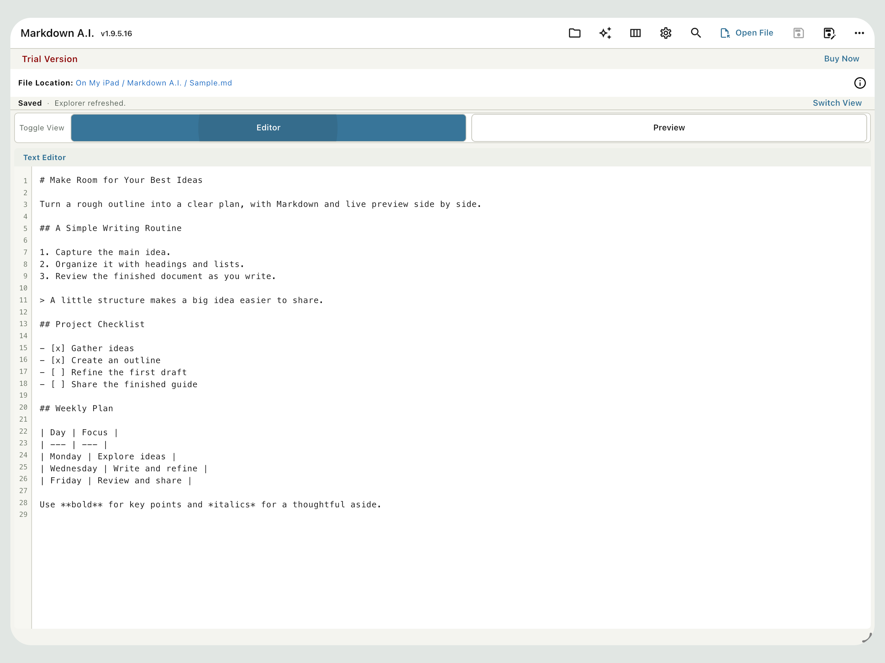
Focus on Your Draft
Give your document more room with the focused editor, then switch to Preview when you want to review it.
A Writing Flow for Your Mac
1
Open your folder
Point Markdown A.I. at a project folder or your Documents/Markdown A.I. workspace.
2
Write with live preview
Draft in the editor while preview updates beside you — headings, code blocks, and diagrams included.
3
Stay in flow
Use Quick Open, favorites, and session restore to move fast without leaving the app.
Private. Local. Secure.
Editing and preview rendering happen on your device. On Mac, optional AI connects to the local endpoint you configure; on iPad, supported AI requests run on the device. Markdown A.I. does not upload your documents to ProductivitySurge, LLC servers.
See our privacy policy for details.
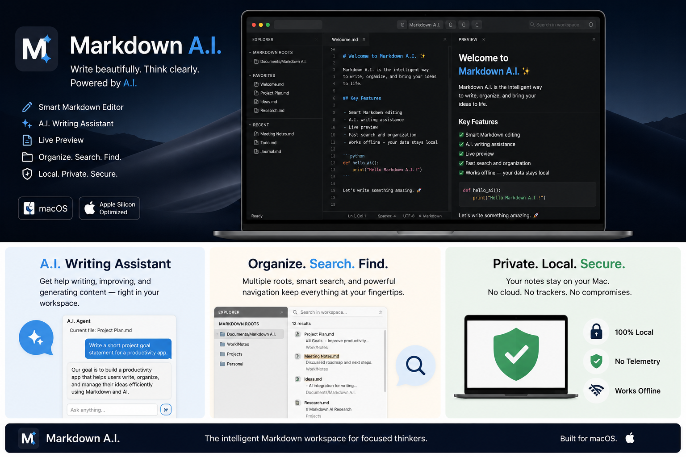
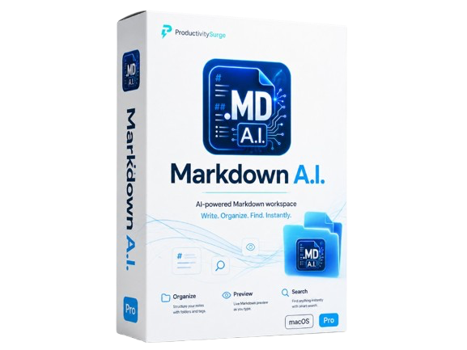
For Mac and iPad
Choose Your App Store Edition
Explore the Mac and iPad editions, then review current download and subscription options through Apple.